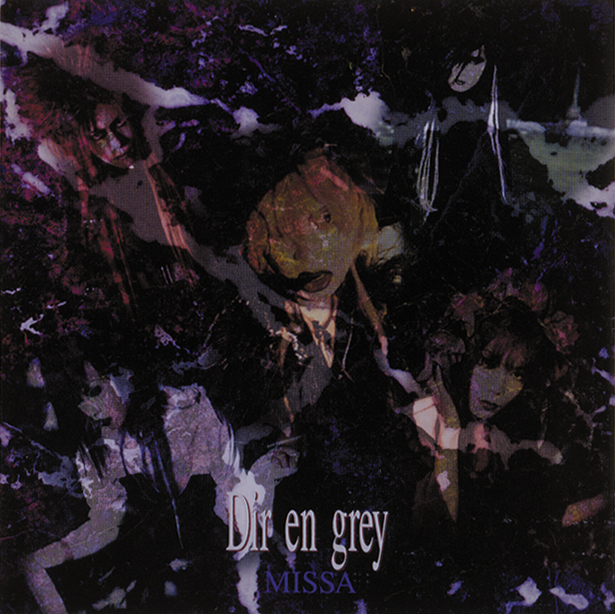
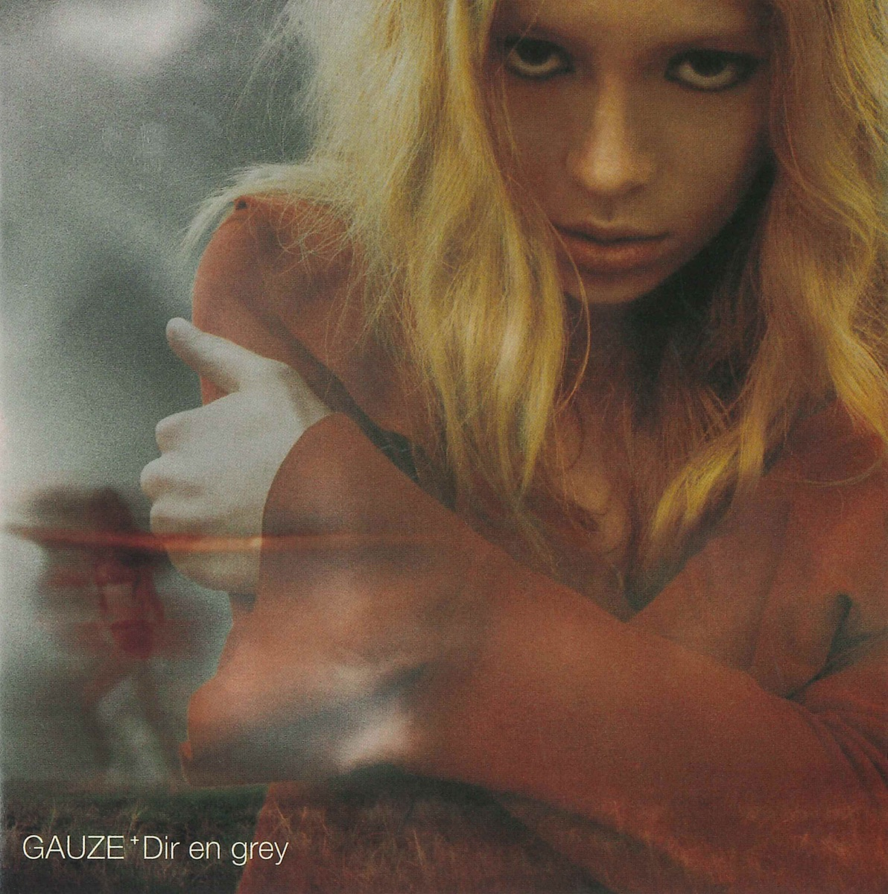
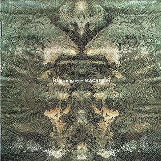
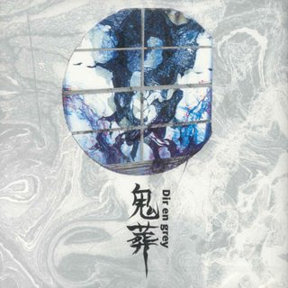
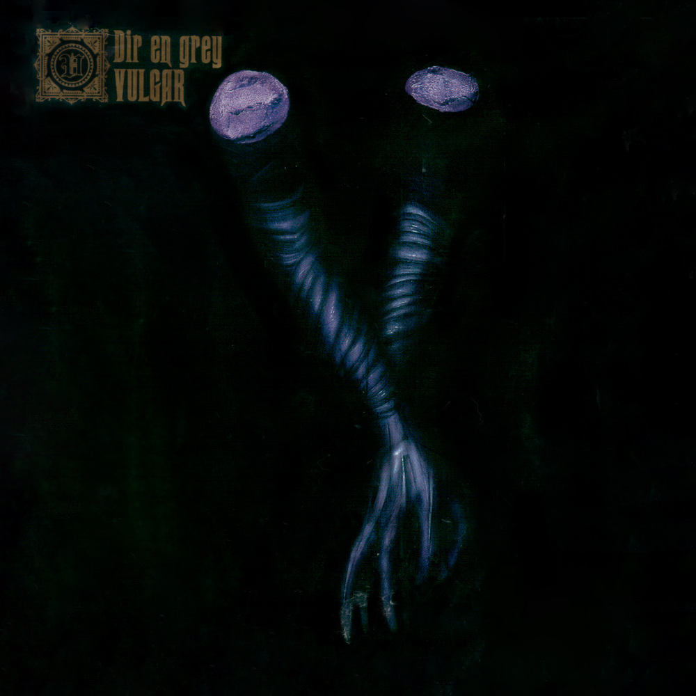
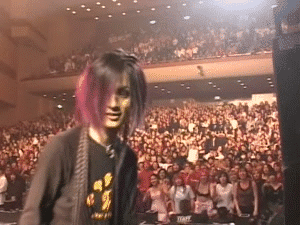

DIR EN GREY — японская авангардная группа, основанная в 1997 году в городе Осака. На сегодняшний день группа издала одиннадцать студийных альбомов. Считается одной из самых популярных групп за пределами Японии. Их многочисленные стилистические изменения сделали жанр музыки группы трудно определяемым, а музыкальные критики называют их звучание больше, чем музыкой, ссылаясь на стирание границ стиля и музыкального восприятия.
Сначала они начинали как visual-kei группа, после чего закончили свою indie эру, становясь группой major.

| ПЯТЬ РАННИХ АЛЬБОМОВ | |
|---|---|
|  | MISSAПервый альбом, в нем все еще есть звучание "старой школы" visual-kei |
|  | GAUZEВторой альбом, вышедший в 1999 году. Клипы все еще визуальны, но звук уже отличается от того, что было в первом альбоме, группа эксперементирует со звучанием |
|  | MACABREТретий альбом группа представила в 2000 году. Одноименная песня многими фанатами считается очень серьезной. Есть также песня на русском "Deity" - название может иметь значение, в переводе с английского "божество", но оно также созвучно с русским словом "дети" |
|  | KISOUАльбом 2002 года, он очень эксперементален, есть много электронного звука, на мой взгляд это альбом с самым интересным звучанием. Группа уже отошла от visual-kei и ищет себя вне рамок стиля |
|  | VULGARВыпущен в 2004 году. На группу обрушилось много негатива из-за ню-метал звучания, а именно - ритмичный реп (хотя он и раньше появляся, дадада) НО это мой the most любимый альбом. С ним также вышел самый, пожалуй, скандальный клип OBSCURE |
УЧАСТНИКИ
